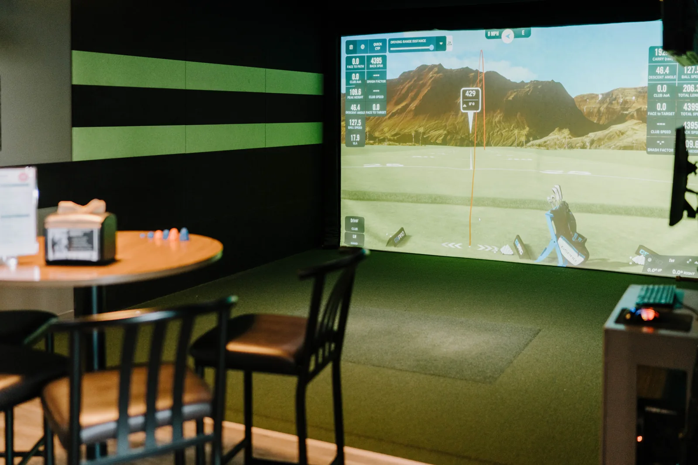
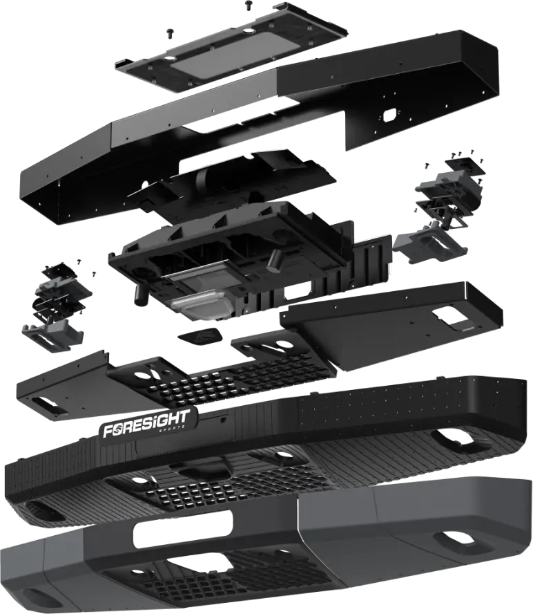
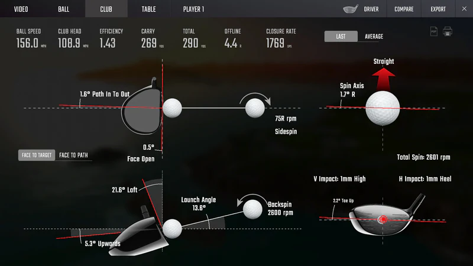
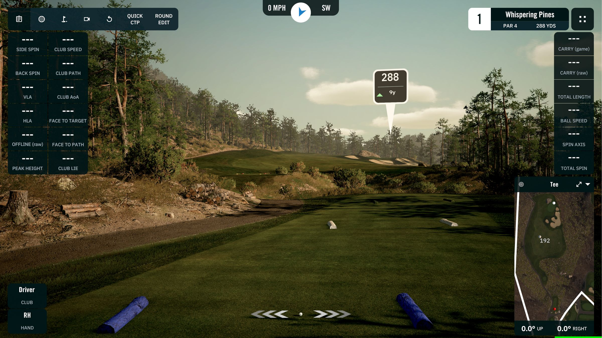

Room to swing.
Mounted above the hitting area, Falcon keeps the launch monitor off the floor.
The feedback to work on your game. The courses to get lost in it. Explore the technology behind your next round at AVID.

Our newest overhead launch monitor delivers a massive hitting area with the utmost shot-measuring accuracy and reliability, courtesy of the same Quadrascopic Technology found in the award-winning GCQuad. The smaller form factor still captures nearly twice the measured data parameters of competitive overhead launch monitors.
Four cameras. Quadrascopic Technology. A clearer picture of every shot.
Scroll to explore the Falcon ↓
Mounted above the hitting area, Falcon keeps the launch monitor off the floor.
High-speed cameras capture ball and club information around the moment of contact.
Foresight Falcons deliver ball and clubhead feedback in every bay at AVID.
Clubhead measurement requires club markers and the appropriate hitting zone. Our team can help with setup. View sticker pricing. Official Falcon specifications.
Select a measurement to explore what it tells you. The screen below shows example data, not a live shot.

EXAMPLE DATA / NOT A LIVE SESSIONClub path describes the direction the clubhead travels at impact relative to the target line.
Compare your path from swing to swing. Review it alongside face angle to build a clearer picture of your shot pattern.
Clubhead data is available in every bay with our Foresight Falcons, giving you detailed feedback to better understand your swing and make the most of every session.
We want every visit to offer something useful, whether you’re practicing, working with a coach or comparing clubs.
Look for patterns across your shots and use feedback to guide what you work on next.
A coach can help turn your session’s feedback into an understandable practice plan.
Review how different club setups perform with your swing during a fitting.
Explore GSPro’s growing library of community-created courses. Find a new favourite, revisit a familiar layout, or let your foursome choose the next challenge.

Browse all 2,800+ courses available on GSPro here.
Opens Simulator Golf Tour. Availability at AVID depends on installation and updates; ask us about a specific course before your visit. Course simulations are community-created and are not affiliated with the real-world courses. Gameplay image: GSPro.